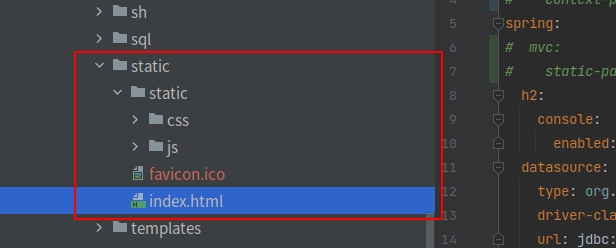
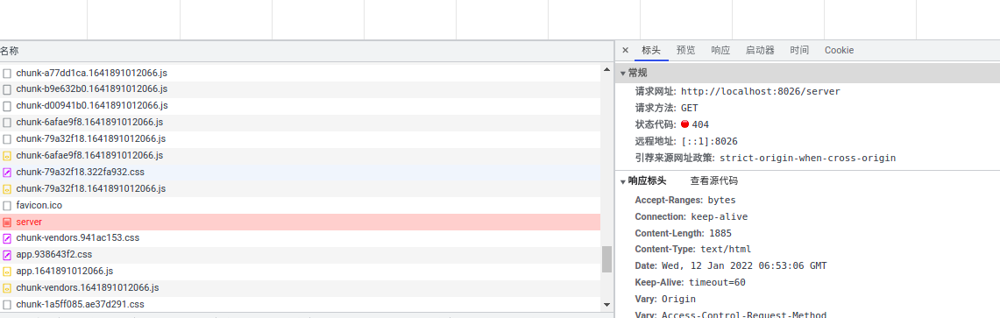

前后端不分离踩坑（嵌入式）
背景描述
接了一个简单的项目，我们直接以前端嵌入spring的方式开发，vue的前端工程师打好包，我们直接放入到resourcse/static目录下,在这样的情况下踩了一些坑

设置独立的项目名记得通知前端
比如我们的项目叫作agent。
我会在spring下面设置server.servlet.context-path属性，像这样
1 | server: |
我们所有的浏览器访问路径也都是/agent开始的，比如登录是/agent/login
但是，前端打包的时候，不知道agent是项目名，直接以根目录开头
所以打包之后，index.html访问的js的路径都是/static/js,/static/css
导致index.html访问找不到js，css资源，首页白屏
如果有项目名记得通知前端，将js，css的访问路径前加上项目名，比如我们这样的需要改成agetnt/static/js,agent/static/css
能不设置代理路径,就尽量不设置
前后端分离的时代，我们一般在部署到nginx服务器之前,打vue的前端包,都会设置代理的IP，端口和路径，就像这样
1 | # 页面标题 |
但是由于静态资源是嵌入式的，我们直接将打好的前端文件夹放入到static里面
但是如果直接访问服务网站就会出现404
1 | Whitelabel Error Page |
页面上会出现，类似的错误，查询网络请求会发现，它请求的是客户端本地的网址

这种情况的解决方法很简单，只要将VUE_APP_BASE_API的值设置为空就可以，像这样
1 | VUE_APP_BASE_API = '' |
刷新页面导致的404白页
而当我们设置好之后,发现第一次访问页面是可以的，但是刷新后又出现了404白页的状况
原因是前后端分离的状况下，页面服务器和web接口服务器是分开的，浏览器只会访问页面服务器上的东西，而接口请求是通过页面转发的
而前端嵌入spring boot之后，刷新页面浏览器只会去寻找有没有相应的接口，而不会去访问页面。所以这里需要在spring boot里面进行一个强制跳转设置
spring boot 3.x代码
1 |
|
这样，如果出现404白页，那么服务器就会去找index.html页面，请求index.html里面的js路径